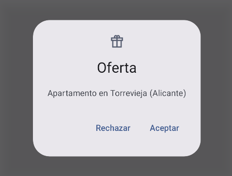
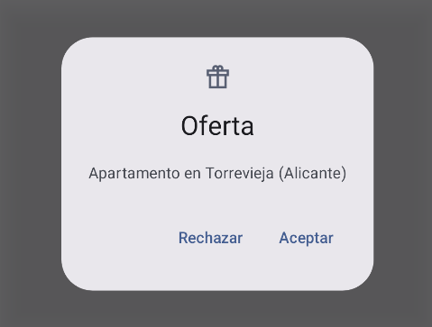

Tema 3.3 - Componentes de Material Design
Descargar estos apuntes pdf o html
Índice
Introducción
En el proceso de diseño de una aplicación, el desarrollador debe tener en cuenta la experiencia de usuario (UX) y la interfaz de usuario (UI). La experiencia de usuario se refiere a cómo se siente el usuario al interactuar con la aplicación, mientras que la interfaz de usuario se refiere a cómo se ve la aplicación y cómo se organizan los elementos de la interfaz de usuario.
Tradicionalmente en muchos frameworks de diseño de aplicaciones, se ha intentado separar el diseño de la interfaz de usuario de la implementación de la lógica de la aplicación. Esto permite que los diseñadores de aplicaciones y los desarrolladores de aplicaciones trabajen en paralelo. Existiendo por tanto, una parte del equipo especializada en diseño gráfico y otra en programación.
Sin embargo, esta separación puede ser problemática por ciertos motivos:
-
Puede sucederá el diseñador y el programador no trabajan en paralelo, sino que el diseñador entrega un diseño a un programador que debe implementarlo. En este caso, el programador debe entender el diseño y el diseñador debe entender las limitaciones de la implementación.
-
Por la razón anterior, en entornos medios o pequeños, lo más común es que el diseño y la programación la realiza la misma persona que suele ser un programador carente, la mayoría de las veces, de conocimientos suficientes de diseño gráfico. Por tanto, el programador, además de tener gusto por el diseño, debe aprender a utilizar herramientas de diseño gráfico RAD cómo las que incluyen los propios IDE para de forma visual generar el XML que define el interfaz y que a menudo consumían mucho tiempo de desarrollo.
-
Se produce la mezcla de lenguajes de programación con lenguajes de diseño gráfico. Por ejemplo, en Android, el diseño de la interfaz de usuario se define en archivos XML y la lógica de la aplicación se implementa en Java o Kotlin. Esto obligaba al programador a mantener dos fuentes de código diferentes para una sola pantalla de la aplicación. En la mayoría de los casos el programador iba directamente al código XML y no utilizaba las herramientas visuales de diseño o producía errores al intentar renderizar los cambios pues al ser XML un lenguaje para máquinas era fácil cometer errores y encontrarlos.
-
La reusabilidad de los componentes de la interfaz de usuario era más compleja pues en el caso de Android se lograba a través, de estructuras como
Fragments, que añaden capas de complejidad al código. -
Por último, la separación de la lógica de la aplicación y la interfaz de usuario puede hacer que el programador no tenga en cuenta la experiencia de usuario y se centre en la funcionalidad de la aplicación. Esto puede dar lugar a aplicaciones que funcionan correctamente pero que no son fáciles de usar o reconocibles por los usuarios.
📣 Resumen: El desarrollador de aplicaciones móviles debe tener en cuenta:
- La necesidad reusabilidad de los componentes de la interfaz de usuario.
- Lo que usuarios esperan que las aplicaciones se comporten de una manera determinada. Esto es, debemos tener en cuenta la experiencia de usuario UX.
- Que debe desentenderse, en la medida de lo posible, del diseño gráfico y centrarse en la funcionalidad de la aplicación.
- La facilidad para adaptar la interfaz de usuario a diferentes dispositivos y tamaños de pantalla. Así como cambiar fácilmente nuestros diseños de tipografía, paleta de colores, modos de luz y oscuridad, etc.
Material Design
- Documentación oficial: Material Design
- Documentación oficial: Android
Para evitar muchos de los inconvenientes anteriores, Google ha desarrollado Material Design. Material Design es un conjunto de pautas de diseño que se pueden utilizar para crear aplicaciones con una interfaz de usuario moderna y coherente. Material Design también incluye un conjunto de componentes de interfaz de usuario que se pueden utilizar para crear diseños de interfaz de usuario creados expertos en diseño gráfico y UX. Por hacer una analogía simple, podemos decir que Material Design es a Android lo que Bootstrap es a la web.
En Material Design, los elementos de la interfaz de usuario se denominan componentes. Los componentes de Material Design se pueden utilizar para crear diseños de interfaz de usuario que se pueden utilizar en diferentes dispositivos y tamaños de pantalla. Los componentes de Material Design también se pueden utilizar para crear diseños de interfaz de usuario que se pueden adaptar a diferentes modos de luz y oscuridad, así como a diferentes paletas de colores y tipografías a este concepto se le llama tematización.
Material genera diseños comunes para las aplicaciones de Android, iOS, Flutter y la web. Por tanto, podemos decir que Material Design es un lenguaje de diseño que se puede utilizar para crear aplicaciones para diferentes plataformas. En este tema nos centraremos en el uso de Material Design para crear aplicaciones de Android.
Dentro de android, Material Design se puede utilizar de dos formas:
- MDC-Android: Componentes para las vistas XML de Android. Aunque usemos vistas XML, el uso de estos componentes minimiza algunas de las desventajas que hemos mencionado en la introducción.
- Jetpack Compose: Componentes para la nueva forma de crear interfaces de usuario en Android de forma declarativa..
No obstante, el uso de Material Design no es excluyente y se puede combinar con diseños personalizados. De hecho, pese a su 'juventud', empiezan a aparecer librerías de componentes OpenSource de terceros en GitHub o webs de recopilación de estos como:
- https://www.jetpackcompose.app/compose-catalog (Libre)
- https://www.composables.com/androidx (Suscripción)
Además, un diseñador puede crear un diseño personalizado con herramientas genéricas como Figma y el desarrollador puede implementar usar esos diseños en JetpackCompose utilizando herramientas de importación como el Plug-in Relay para Android Studio. (Vídeo Ejemplo1, Vídeo Ejemplo2).
✋ Importante: Nosotros en estos apuntes vamos a tratar solo algunos componentes de básicos de Material Design 3 por ser la versión más reciente. Además, profundizar en temas de diseño gráfico y UX está fuera del alcance de este módulo y más en el Diseño de Interfaces.
Material Design 2 vs. Material Design 3
En el momento de crear estos apuntes, Google aún está en proceso de migración de Material Design 2 a Material Design 3. Aunque al crear un proyecto nuevo en Android Studio ya utiliza por defecto Material Design 3.
Una de las principales novedades de Material 3 respecto a sus versiones anteriores, es el soporte de colores dinámicos. Este permite que los colores utilizados en las aplicaciones se adapten automáticamente para coincidir con la selección de fondo de pantalla del usuario. Aunque como hemos comentado, nosotros no vamos a profundizar en tanto detalle.
✋ Importante: Encontraremos muchos proyectos de ejemplo en Internet que utilizan Material Design 2 y por tanto componentes que aún no están migrados a Material Design 3 o incluso que ya no van a existir en este aversión. Por lo que es conveniente saber distinguirlas y usar, por coherencia de interfaz, solamente los componentes de la 3.
Material 2
androidx.compose.material Actualmente va por la versión 1.6.0 aún en versión beta. (Última estable 1.5.3)
Material 3
Actualmente va por la versión 1.2.0 aún en versión alfa está. (Última estable 1.1.2), Nosotros la tenemos incluida en nuestro proyecto de ejemplo en el archivo build.gradle.kts de la carpeta app con los imports...
implementation("androidx.compose.material3:material3-android:1.2.0-alpha08") implementation("androidx.compose.material:material-icons-core") implementation("androidx.compose.material:material-icons-extended")
✋ Importante: Por tanto, cualquier componente fuera de
material3-android:1.2.0-alpha08no lo vamos poder usar. Además, al estar en versión alfa (debe pasar aún por beta y release) es susceptible de cambios y errores.
Si te fijas también hemos incluido la librería de iconos material-icons-core y material-icons-extended que me permitirán usar iconos de Material Design de forma rápida sin necesidad de ir creando recursos Drawables.
Estas últimas librerías no son exclusivas de Material Design 3 y también se pueden usar con Material Design 2.
Componentes Material Design 3
Introducción Componentes Material Design 3
- Documentación oficial: Components Material Design 3
- Vídeo Tutorial Inglés (Introducción): Philipp Lackner
- Vídeo Tutorial Inglés (Avanzado): Philipp Lackner
- Vídeo Tutorial Inglés: Stevdza-San
📌 Nota: Al ser tantos y no pretender ser esta documentación una copia de la página oficial de material. Vamos a ver algunos de los componentes más básicos y que más se usan. Para ver el resto de componentes, puedes consultar la documentación oficial de Material Design 3. Además, más adelante trataremos componentes de navegación y scaffolding con más detalle.
Los podemos clasificar en:
-
Acciones
- Botones normales
- Botones flotantes (FAB)
- Botones extendidos flotantes (extended FABs)
- Botones con texto e iconos.
- Botones Segmentados
-
Comunicación
- Snackbars
- Badges
- Progress indicators
-
Contenedores
- Cards
- Bottom sheets
- Carousels
- Diálogos
- Divider
- Listas
- Side sheets
- Tooltips
-
Navegación
- Top app bar
- Bottom app bar
- Navigation bar
- Navigation drawer
- Navigation rail
- Tabs
-
Selección
- Checkboxes
- Radio buttons
- Switches
- Sliders
- Chips
- Menus
- Pickers (Time & Date)
-
Entrada de texto
- Text fields
No todos los componentes están disponible para todas las plataformas. Deberemos consultar su disponibilidad para Jetpack Compose en los recursos de desarrollo. Por ejemplo, el botón común tiene:
Enlaces Importantes
-
Documentación oficial de los Componentes básicos en Jetpack Compose. Aquí, puedes encontrar la documentación en la que nos basaremos en esta documentación y la de los componentes que no trataemos en el tema.
-
Documentación oficial de Todo el paquete de Material 3 para Jetpack Compose. Aquí, puedes encontrar configuraciones más avanzadas de los componentes que no trataremos en el tema.
-
Google además, tiene una App en el Play Store denominada Compose Material Catalog. Esta App tiene un catálogo de componentes de Material Design 3 del que puedes ver su código fuente. Si quieres acceder a los ejemplos se encuentran disponibles en los siguientes repositorios de Google o en este de GitHub.
Botones
-
Documentación oficial: Buttons
-
Documentación oficial: Material 3
✋ Importente Algunas de las cosas que vamos a contar para botones, son aplicables para el resto de componentes de Material Design 3.
Material me proveerá de muchos tipos de botones ya predefinidos que se adaptan sus guías de diseño de Material Design. Lo más adecuado, es usarlos sin ningún tipo de modificador de aspecto y funcionalidad.
Por ejemplo, aquí tenemos tres casos simples descritos en la documentación.
@Composable fun BotonePreview() { HolaMundoTheme { Row(horizontalArrangement = Arrangement.SpaceEvenly) { Button(onClick = { /*TODO*/ }) { Text(text = "IES Balmis") } OutlinedButton(onClick = { /*TODO*/ }) { Text(text = "IES Balmis") } FilledTonalButton(onClick = { /*TODO*/ }) { Text(text = "IES Balmis") } } } }
De hecho, si colocamos el ratón sobre la función @Composable Button en el propio Android Studio, nos aparecerá el siguiente interfaz.
@Composable fun Button( onClick: () -> Unit, modifier: Modifier = Modifier, enabled: Boolean = true, shape: Shape = ButtonDefaults.shape, colors: ButtonColors = ButtonDefaults.buttonColors(), elevation: ButtonElevation? = ButtonDefaults.buttonElevation(), border: BorderStroke? = null, contentPadding: PaddingValues = ButtonDefaults.ContentPadding, interactionSource: MutableInteractionSource = remember { MutableInteractionSource() }, content: @Composable RowScope.() -> Unit )
En el podemos observar que muchos de los parámetros tienen valores por defecto como ButtonDefaults.shape, ButtonDefaults.buttonElevation(), ButtonDefaults.buttonColors() o ButtonDefaults.ContentPadding todos ellos definidos en Material 3 sobre los valores de diseño concretos de Material Design 3.
Además, como en la mayoría de funciones composables el último parámetro content es un landa composable que me permite añadir otros elementos composables dentro del botón como Textos, Imágenes, etc. Con un layout RowScope que me permite añadir elementos en horizontal.
Si por algún casual, quisiéramos crear un botón más personalizado. Deberíamos aplicar en la medida por defecto los valores de diseño de Material Design 3. Por ejemplo, si quisiéramos crear un composable botón personalizado como el del siguiente ejemplo:
@Composable fun BotonePreview() { HolaMundoTheme { ButtonLikeBalmis(onClick = { /*TODO*/ }) } }

Fíjate que en todos los casos no personalizados hemos mantenido los valores por defecto de Material Design 3.
@Composable fun ButtonLikeBalmis(onClick: () -> Unit) { // Va a ser un botón con los colores de borde de Material Design 3, // pero cambiando el contentColor a Rojo. val colors: ButtonColors = ButtonDefaults.outlinedButtonColors( contentColor = Color.Red ) Button( onClick = onClick, // El bode tendrá el color del contentColor pero mantedrá // el grosor definido de Material 3 para los botones con borde. border = BorderStroke( width = ButtonDefaults.outlinedButtonBorder.width, color = colors.contentColor ), colors = colors, // El padding será el mismo que usen los botones con Icono. contentPadding = ButtonDefaults.ButtonWithIconContentPadding ) { // La imagen será un Icono de Material Design 3 pero ... Image( // Su tamaño será el de los iconos en los botones de Material 3. modifier = Modifier.size(ButtonDefaults.IconSize), // Icono ya definido Material Design 3 imageVector = Icons.Filled.Favorite, contentDescription = "Favorite", // El color del icono será también contentColor colorFilter = ColorFilter.tint(colors.contentColor) ) // El espaciado tiene el mismo tamaño que el de los botones con Icono. Spacer(Modifier.size(ButtonDefaults.IconSpacing)) Text("I love Balmis") } }
Como ves, para dibujar un simple botón personalizado, hemos tenido que tener muchas cosas en cuenta y más si queremos mantener la coherencia de UX con el resto de botones de la aplicación. Por tanto, lo más adecuado es usar los botones predefinidos de Material Design 3, donde lan gran mayoría de casos de uso de botones están cubiertos en sus guías de uso donde nos indicará una sería de buenas y malas prácticas de uso de botones según el tipo. Esto además, es aplicable al resto de componentes.
CheckBox
- Documentación oficial: Material 3
Básicamente es una caja con dos estados, marcado o no marcado. Normalmente va asociado a un texto por lo que sería interesante definirnos un componente personalizado.
Una posible implementación de este componente más complejo podría ser CheckboxWithLabel:
// Estará preparado para hacer State Hoisting por tanto es Stateless @Composable fun CheckboxWithLabel( label: String, modifier: Modifier = Modifier, checkedState: Boolean, enabledState: Boolean = true, onStateChange: (Boolean) -> Unit) { // Definimos un Row para alinear Checkbox y Texto Row( modifier = modifier, verticalAlignment = Alignment.CenterVertically, horizontalArrangement = Arrangement.Start ) { Checkbox( checked = checkedState, onCheckedChange = onStateChange, enabled = enabledState, ) Text( text = label, maxLines = 1, style = MaterialTheme.typography.bodySmall ) } }
Por ejemplo, para probar nuestro componente podemos usar el siguiente @Preview ...
@Preview(showBackground = true, name = "CheckBoxPreview") @Composable fun CheckBoxPreview() { var checkedState by remember { mutableStateOf(true) } HolaMundoTheme { Box { CheckboxWithLabel( label = "I Love Balmis", modifier = Modifier.padding(12.dp) .wrapContentWidth(), checkedState = checkedState, onStateChange = { checkedState = it } ) } } }
La previsualización sería la siguiente ...
Guía de uso de CheckBox
- Seleccionar una o más opciones de una lista.
- Aceptar los términos y condiciones de un contrato o solicitud.
- Cuando queramos seleccionar una lista multiple de opciones o sub-opciones que también contengan una CheckBox.
- No deberemos usarlo cuando queramos seleccionar una única opción de una lista de opciones. En ese caso, deberemos usar RadioButtons.
Cards
- Documentación oficial: Cards
- Documentación oficial: Material 3
El componible Card (Tarjeta) actúa como un contenedor de Material Design para tu interfaz de usuario. Lo podemos encontrar en otros frameworks como Bootstrap o Materialize y por lo general, las tarjetas presentan un único y coherente elemento de contenido.
El enfoque es representar un único elemento de contenido lo que distingue a Card de otros contenedores como Surface, Box, etc. Por ejemplo, una tarjeta puede contener un texto, una imagen y un botón, pero no debe contener una lista de elementos.
Cuando y como usar Cards
- Deben ser fáciles de ver de un vistazo para encontrar información.
- Los elementos e imagenes deben colocarse de forma que indiquen claramente la jerarquía.
- Pueden ofrecernos un punto de entrada a niveles más profundos de detalle o navegación.
- Pueden ser mostradas juntas en una cuadrícula, lista vertical o carrusel.
Algunos parámetros clave para tener en cuenta son los siguientes:
elevation: Agrega una sombra al componente que hace que parezca elevado sobre el fondo.colors: Utiliza el tipoCardColorspara establecer el color predeterminado tanto del contenedor como de cualquier hijo.enabled: Si se pasafalsepara este parámetro, la tarjeta aparece como deshabilitada y no responde a la entrada del usuario.

Como realmente un card es un contenedor. Lo más importante es seguir la guía de diseño de Material Design 3 para rellenarlo. Por ejemplo, para diseñar la anatomía básica de un card propuesta por material y que se muestra en la imagen de ejemplo de arriba, podríamos generar el siguiente código...
@Composable fun TarjetaBalmis(modifier: Modifier = Modifier) = ElevatedCard( modifier = modifier.then(Modifier.wrapContentSize()), elevation = CardDefaults.cardElevation(defaultElevation = 6.dp) ) { Column { Surface( modifier = Modifier.clip(CardDefaults.shape), color = MaterialTheme.colorScheme.primary ) { Image( modifier = Modifier.fillMaxWidth(), painter = painterResource(id = R.drawable.balmis), contentDescription = "IES Doctor Balmis", contentScale = ContentScale.FillWidth, alpha = 0.8f ) } Spacer(modifier = Modifier.size(12.dp)) Text( modifier = Modifier.padding(start = 12.dp, end = 12.dp), text = "IES Doctor Balmis", style = MaterialTheme.typography.headlineLarge ) Text( modifier = Modifier.padding(start = 12.dp, end = 12.dp), text = "Alicante", style = MaterialTheme.typography.headlineSmall ) Spacer(modifier = Modifier.size(12.dp)) Text( modifier = Modifier.padding(start = 12.dp, end = 12.dp), text = "Instituto de Educación Secundaria donde se imparte el Ciclo Formativo" + " de Grado Superior de Desarrollo de Aplicaciones Multiplataforma", style = MaterialTheme.typography.bodyMedium ) Row( modifier = Modifier.fillMaxWidth().padding(12.dp), horizontalArrangement = Arrangement.End ) { Button(onClick = { }) { Text(text = "Saber más") } } } }
TextField (Campos de Texto)
-
Documentación oficial: Material 3
-
Video Tutorial Inglés: Philipp Lackner
-
Video Tutorial Inglés: Stevdza-San
-
Video Tutorial Español: DevExperto
-
Video Tutorial Español: Martin Kiperszmid
Usaremos un campo de texto cuando alguien necesite introducir texto en una interfaz de usuario, como rellenar información de contacto o de pago.
Hay dos tipos de campos de texto. Ambos usan un contenedor para proporcionar una pista visual para la interacción y proporcionan la misma funcionalidad. La única diferencia es el aspecto visual.
TexField: Campos de texto rellenosOutlinedTexField: Campos de texto con contorno. Estos tienen menos énfasis visual que los campos de texto rellenos. Cuando aparecen en lugares como formularios (donde se colocan muchos campos de texto juntos) su énfasis reducido ayuda a simplificar el diseño.
Veamos un ejemplo de uso de un OutlineTextField propio a partir del proporcionado por Material Design 3. En él decidiremos que los mensajes de error se muestren debajo del campo de texto y añadiremos el carácter * tras el label cuando haya un error.
- Puedes descargar el proyecto de ejemplo de este componente en el siguiente enlace: OutlinedTextFieldWithErrorState
Primero, definiremos una clase para pasar el estado de error del TextField si lo hubiese. Por ejemplo ....
data class Validacion( val hayError: Boolean, // Si hay error o no. val mensajeError: String? = null // EL mensaje asociado al error. )
Veamos una posible implementación de nuestro OutlinedTextField derivado al que denominaremos OutlinedTextFieldWithErrorState.
@Composable fun OutlinedTextFieldWithErrorState( modifier: Modifier = Modifier, label: String, textoState: String, textoPista: String = "", leadingIcon: @Composable (() -> Unit)? = null, validacionState: Validacion, keyboardOptions: KeyboardOptions = KeyboardOptions(keyboardType = KeyboardType.Text), keyboardActions: KeyboardActions = KeyboardActions(), onValueChange: (String) -> Unit ) { OutlinedTextField( modifier = modifier, value = textoState, onValueChange = onValueChange, singleLine = true, // Icono al principio del TextField por defecto vale null. leadingIcon = leadingIcon, // Como vamos a mostrar el texto de la pista o hint cuando estemos editando. // por defecto la pista es la cadena vacía. placeholder = { Text( text = textoPista, style = TextStyle( color = MaterialTheme.colorScheme .onSurfaceVariant.copy(alpha = 0.4f) ) ) }, // Etiqueta personalizada que se muestra cuando no hay texto o // encima del TextField cuando estamos editando. // Le ponemos un asterisco si hay error como hemos especificado. label = { Text(if (validacionState.hayError) "${label}*" else label) }, // La opciones del teclado permitirán la entrada alfanumérica. keyboardOptions = keyboardOptions, // Composable bajo el TextField que se muestra cuando hay error. supportingText = { if (validacionState.hayError) { Text(text = validacionState.mensajeError!!) } }, // Parámetro con el estado del error. isError = validacionState.hayError, keyboardActions = keyboardActions ) }
A continuación, vamos a definir un componente derivado de OutlinedTextFieldWithErrorState que nos permita introducir correos electrónicos y validarlos denominado OutlinedTextFieldEmail
@Composable fun OutlinedTextFieldEmail( modifier: Modifier = Modifier, label: String = "Email", emailState: String, validacionState: Validacion, onValueChange: (String) -> Unit ) { OutlinedTextFieldWithErrorState( modifier = modifier, label = label, textoState = emailState, // La pista cambiará. textoPista = "ejemplo@correo.com", // Las opciones de teclado serán para un email. keyboardOptions = KeyboardOptions(keyboardType = KeyboardType.Email), // El icono será el de un email. leadingIcon = { Icon( imageVector = Icons.Filled.Email, contentDescription = "Email" ) }, // Será Stateles y la forma de validar la decidiremos al usarlo. validacionState = validacionState, onValueChange = onValueChange ) }
En el siguiente ejemplo, podemos ver como quedarán la redefinición de nuestro composables OutlinedTextFieldEmail y OutlinedTextFieldWithErrorState con el código de @Preview.


@Preview(showBackground = true, name = "TextFiledPreview") @Composable fun TextFiledPreview() { var nombreState by remember { mutableStateOf("") } var validacionNombre by remember { mutableStateOf(Validacion(false)) } var emailState by remember { mutableStateOf("") } var validacionEmail by remember { mutableStateOf(Validacion(false)) } HolaMundoTheme { Column { OutlinedTextFieldWithErrorState( modifier = Modifier.fillMaxWidth(), label = "Nombre", textoState = nombreState, validacionState = validacionNombre, onValueChange = { nombreState = it validacionNombre = Validacion( it.isEmpty(), "El nombre no puede estar vacío" ) } ) OutlinedTextFieldEmail( modifier = Modifier.fillMaxWidth(), emailState = emailState, validacionState = validacionEmail, onValueChange = { emailState = it validacionEmail = Validacion( it.isEmpty() || !Regex("^[A-Za-z](.*)([@]{1})(.{1,})(\\.)(.{1,})$") .matches(it), "El email no es válido" ) } ) } } }
Chips
- Documentación oficial: Chips
- Documentación oficial: Material 3
El componente Chip es un elemento de interfaz de usuario compacto e interactivo. Representa entidades complejas como un contacto o una etiqueta, a menudo con un icono y una etiqueta. Puede ser seleccionable, eliminable o clickeable.
Diferencia con los botones
-
Los Botones:
- Se utilizan siempre para iniciar acciones.
- Deben aparecer en grupos de uno o dos elementos.
- Son estáticos y predefinidos. Esto es, no cambian de aspecto según su contexto.
-
Los Chips:
- Deben aparecer de manera dinámica como un grupo de múltiples elementos interactivos.
- No se utilizan para iniciar acciones, sino para representar un estado o atributo, o para realizar una acción secundaria.
- Pueden aparecer en grupos de más de dos elementos.
- Son reactivos y contextuales, Esto es, deben ofrecer una acción diferente según la naturaleza del contenido que respalda.
- Representan bifurcaciones o posibles caminos en una experiencia.
- Pueden tener scroll horizontal.
Tipos de Chips
Los cuatro tipos de chips y dónde podrías usarlos son los siguientes:
📌 Nota: Además de estos composables, tendremos una versión con elevación con el prefiho
Elevated. Por ejemplo,ElevatedFilterChip.
-
AssistChip(Ayuda): Guía al usuario durante una tarea. A menudo aparece como un elemento de interfaz de usuario temporal en respuesta a la entrada del usuario. -
FilterChip(Filtro): Permite a los usuarios refinar el contenido de un conjunto de opciones. Pueden ser seleccionados o deseleccionados, y pueden incluir un icono de marca de verificación cuando están seleccionados. -
InputChip(Entrada): Representa información proporcionada por el usuario, como selecciones en un menú. Pueden contener un icono y texto, y proporcionan una 'X' para eliminarlos. -
SuggestionChp(Sugerencia): Proporciona recomendaciones al usuario basadas en su actividad o entrada reciente. Suelen aparecer debajo de un campo de entrada para provocar acciones del usuario.
Por ejemplo, veamos como crear un FilterChip personalizado.
@OptIn(ExperimentalMaterial3Api::class) @Composable fun FilterChipWithIcon( modifier: Modifier = Modifier, seleccionadoState: Boolean = true, textoState: String = "Etiqueta", iconState: ImageVector? = null, // Icono en cabecera opcional. onClick: () -> Unit = {} ) { FilterChip( modifier = modifier.then(Modifier.height(FilterChipDefaults.Height)), selected = seleccionadoState, onClick = onClick, label = { Text(textoState) }, leadingIcon = { // Al estar seleccionado, mostramos el icono de selección // y sustituimos el icono iconState por este. if (seleccionadoState) { Icon( imageVector = remember { Icons.Filled.Done }, contentDescription = "Icono seleccionado", modifier = Modifier.size(FilterChipDefaults.IconSize) ) } else { iconState?.let { Icon( imageVector = it, contentDescription = "Icono asociado a la etiqueta", modifier = Modifier.size(FilterChipDefaults.IconSize) ) } } } ) }
A continuación podemos ver un ejemplo de uso de este componente personalizado. El cual nos permite filtrar por estudiantes de 2DAM.
📌 Nota: Aunque en el ejemplo solo se visualiza una opción de filtrado, recuerda que debería haber más de dos opciones de filtrado para que el uso de este componente tenga sentido. Es caso contrario podríamos usar un
CheckBox.
@Preview(showBackground = true, name = "ChipPreview") @Composable fun ChipPreview() { var filtrarPor2DAM by remember { mutableStateOf(false) } HolaMundoTheme { FilterChipWithIcon( seleccionadoState = filtrarPor2DAM, textoState = "Estudiante 2DAM", iconState = remember { Icons.Default.Book }, onClick = { filtrarPor2DAM = !filtrarPor2DAM } ) } }
Este código de ejemplo nos generaría el siguiente chip personalizado, donde podemos ver sus dos estados posibles.

Diálogos
- Documentación oficial: Dialogs
- Video Tutorial Español: AristiDevs
El componente Dialog muestra mensajes emergentes o solicita la entrada del usuario en una capa por encima del contenido principal de la aplicación. Crea una experiencia de interfaz de usuario interrumpida para captar la atención del usuario.
Entre los casos de uso de un diálogo se incluyen los siguientes:
- Confirmar la acción del usuario, como al eliminar un archivo.
- Solicitar la entrada del usuario, como en una aplicación de lista de tareas pendientes.
- Presentar una lista de opciones para que el usuario elija, como seleccionar un país en la configuración de un perfil.
AlertDialog
Proporciona una API conveniente para crear un cuadro de diálogo con temática de Material Design. AlertDialog tiene parámetros específicos para manejar elementos particulares del diálogo. Entre ellos se incluyen los siguientes:
title: El texto que aparece en la parte superior del cuadro de diálogo.text: El texto que aparece centrado en el cuadro de diálogo.icon: El gráfico que aparece en la parte superior del cuadro de diálogo.onDismissRequest: La función que se llama cuando el usuario cierra el cuadro de diálogo, como al tocar fuera de él.dismissButton: Un composable que sirve como botón de cierre.confirmButton: Un composable que sirve como botón de confirmación.
El siguiente ejemplo tendremos un Box con un botón que al pulsarlo nos mostrará una oferta de entre tres aleatorias en un AlertDialog. Si en el dialogo pulsamos en el botón de Aceptar, se mostrará un mensaje en el Box de despedida 'alegre'; si pulsamos el botón de Rechazar, se mostrará un mensaje de despedida 'triste' y si cancelamos el dialogo, se volverá a mostrar el botón.
- Puedes el código de ejemplo a continuación aquí: DialogoOferta.kt
// Definimos una clase con los tres posibles contenidos del Box. enum class ContenidoCaja { BOTON, DESPEDIDA_TRISTE, DESPEDIDA_ALEGRE }
// Composable Stateless que nos genera el composable con el contenido // del Box según el estado gestionado por el AlertDialog @Composable fun ContenidoCaja( contenidoCajaState: ContenidoCaja, // Función que se ejecutará cuando pulsemos el botón de ver oferta. // y que cambiará el estado para mostrar el AlertDialog. onClickVerOferta: () -> Unit ) { when (contenidoCajaState) { ContenidoCaja.BOTON -> { Button(onClick = onClickVerOferta) { Text(text = "Ver Oferta") } } ContenidoCaja.DESPEDIDA_TRISTE -> { Text(text = "Adios, tu te lo pierdes") } ContenidoCaja.DESPEDIDA_ALEGRE -> { Text(text = "Enhorabuena, excelente elección") } } }
@Composable fun DialogoOferta( onAceptarDialogoOferta: () -> Unit, onRechazarDialogoOferta: () -> Unit, onCalcelaDialogoOferta: () -> Unit ) = // AlertDialog de Material 3 AlertDialog( icon = { Icon( Icons.Filled.QuestionAnswer, contentDescription = "Pregunta" ) }, title = { Text(text = "Oferta") }, text = { // La lista la recordamos para no volver a generarla en cada recomposición. val ofertas = remember { listOf( "Apartamento en Torrevieja (Alicante)", "Aston Martin DB9", "100 Ceniceros del IES Balmis" ) } // Mostramos una oferta aleatoria de la lista. Text(text = ofertas.random()) }, // Lo que hacemos al pulsar fuera del AlertDialog para cancelarlo. onDismissRequest = onCalcelaDialogoOferta, confirmButton = { // En los AlertDialog de Material 3, el botón de confirmación // debería ser un TextButton TextButton(onClick = { // Acción de Aceptar la oferta. onAceptarDialogoOferta() onCalcelaDialogoOferta() }) { Text("Aceptar") } }, dismissButton = { TextButton(onClick = { / Acción de Rechazar la oferta. onRechazarDialogoOferta() onCalcelaDialogoOferta() }) { Text("Rechazar") } } )
// Componente Box que implementará la lógica de la oferta. @Composable fun BoxOferta() = Box( modifier = Modifier .fillMaxWidth().size(height = 300.dp, width = 0.dp), contentAlignment = Alignment.Center ) { var verDialogoOferta by remember { mutableStateOf(false) } var contenidoCaja by remember { mutableStateOf(ContenidoCaja.BOTON) } ContenidoCaja( contenidoCajaState = contenidoCaja, onClickVerOferta = { verDialogoOferta = true } ) if (verDialogoOferta) { DialogoOferta( onAceptarDialogoOferta = { contenidoCaja = ContenidoCaja.DESPEDIDA_ALEGRE }, onRechazarDialogoOferta = { contenidoCaja = ContenidoCaja.DESPEDIDA_TRISTE }, ) { verDialogoOferta = false } } }
Si hacemos un @Preview de este último componente, veremos un resultado similar al siguiente si pulsamos aceptar.
 


Resumen
En este tema hemos visto algunos conceptos básicos de Material Design 3 y como usarlos en nuestras aplicaciones. Además, hemos visto como usar algunos componentes, personalizados y crear concreciones de los mismos.
Aunque existen más componentes, son muy similares en uso y conceptos a los que hemos visto en este tema. Por tanto, si necesitas usar alguno de ellos, puedes consultar la documentación oficial de Material Design 3.
Otros componentes relacionados con Menús, Navegación, Listas, Maquetación, etc. los veremos en temas posteriores.